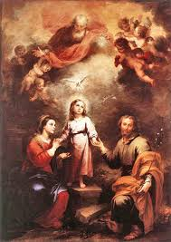
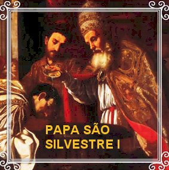
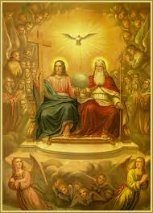

BUSCA DE DEUS
DESDE O INICIO
Depois da Ascensão de JESUS aos
Céus, os Apóstolos e colaboradores do SENHOR, se empenharam na Missão de
consolidar e expandir a Igreja de CRISTO, evangelizando e divulgando as verdades
e os ensinamentos cristãos em todas as regiões. Todavia, naquele período de
transição do paganismo para o cristianismo, a fé católica no DEUS SANTÍSSIMO,
UNO e TRINO, nas inteligências pouco esclarecidas e muito carentes de fé,
adquiriu um julgamento repleto de incompreensões, principalmente diante do MISTÉRIO
DA ENCARNAÇÃO, tão intimamente ligado ao MISTÉRIO TRINITÁRIO. E foi então que
aconteceu o mais deplorável e desagradável fato no nascente Cristianismo, em que aquela fé vacilante de algumas
pessoas enveredou-se pelos caminhos da heresia, investindo grosseiramente contra
as crenças que já estavam arraigadas no espírito dos crentes católicos, produzindo
dúvidas e causando confusões, dentro e fora das Comunidades Cristãs.
OS HERESIARCAS
Surgiu então uma avalanche
abominável de doutrinas heréticas que só mencionaremos os nomes das principais,
porque decidimos não reproduzir as suas absurdas teorias: as doutrinas dos
“Monarchiam Tenemus”, dos
“Patripassistas”, dos “Sabelianismo”,
dos “Adopcionismo”,
dos
“Pneumáticos”, dos “Modalistas”,
dos “Arianos”, dos
“Novacianos” e outras com menos adeptos,
que divulgaram grosseiramente um pensamento errôneo, fundamentado em premissas
falsas, completamente distantes da verdade cristã.
As vozes dos defensores
ortodoxos ao MISTÉRIO TRINITÁRIO se levantaram firme, e energicamente propagaram
em favor da autenticidade da fé conforme as Sagradas Escrituras, atuando com
amplos e irrefutáveis argumentos, corroborados pela razão. Entre os muitos
defensores da TRINDADE SANTÍSSIMA, citamos com plena evidência: Santo Irineu,
Tertuliano, Clemente de Alexandria, Origines, Basílio, Dionísio de Alexandria,
Santo Ambrósio, Santo Atanásio, Santo Hilário e Santo Agostinho. Na verdade
existiram muitos outros lutadores fervorosos e amorosos, que também
corajosamente enfrentaram os heresiarcas, exercitando sua fé no DEUS TRINO,
e que pela nossa convicção pessoal, todos aqueles verdadeiros cristãos também
alegraram o CRIADOR, que guarda carinhosamente os seus nomes albergados
no profundo âmago do CORAÇÃO DIVINO.
Essa luta se arrastou
durante séculos, pois na verdade, reclamava um posicionamento e uma intervenção
firme da Igreja, com uma esclarecida proclamação oficial, no sentido de colocar
um ponto final naquelas discussões que se alongavam desagradavelmente, produzindo
mal-estar e confusão nos espíritos bem intencionados.
CONCÍLIOS ECUMÊNICOS

Foi então que o Papa São
Silvestre (314-335), no ano 325, determinou a realização do 1º Concílio
Ecumênico de Nicéia, que teve a presença de 318 Bispos Católicos e 22 Arianos.
No final das reuniões foi apresentado o símbolo da fé, onde a profissão ortodoxa
no MISTÉRIO DA SANTÍSSIMA TRINDADE confessou definitivamente a existência de UM
SÓ DEUS, em Três Pessoas Divinas: o PAI, o FILHO e o ESPÍRITO SANTO.
Todavia, pelo fato de ainda
permanecer uma forte oposição dos chamados “Pneumáticos”, com uma doutrina totalmente
errônea sobre o DIVINO ESPÍRITO SANTO, que permaneceu incomodando o verdadeiro cristianismo,
no ano 381, o Papa São Damaso I (366-384) convocou a realização do 2º Concílio
Ecumênico, em Constantinopla, para esclarecer definitivamente a Doutrina sobre a
TERCEIRA PESSOA DA SANTÍSSIMA TRINDADE, o que verdadeiramente aconteceu.
Assim sendo, o Primeiro
Concílio criou o “símbolo
da fé”, que foi completado no Segundo Concílio
Ecumênico, e por essa razão, o
“símbolo da fé” ficou denominado:
“Niceno-Constantinopolitano”.
Entretanto, as definições
conciliares não foram suficientes para a total extinção dos movimentos heréticos,
e muitos deles que não se converteram, continuaram divulgando as suas idéias
errôneas e perturbadoras.
Por essa razão, Santo Agostinho
lançou-se com presteza na elaboração de uma obra, para combater firmemente aquelas
terríveis heresias, contando evidentemente, com o auxílio dos diversos escritos fiéis
a doutrina cristã, que já haviam sido elaborados por seus contemporâneos. E foi então,
que desde as suas primeiras reflexões, depois de longa argumentação, o grande mestre
ensinou que o ESPÍRITO SANTO, a Terceira Pessoa da SANTÍSSIMA TRINDADE, é o
“AMOR”,
aquele profundo e eterno “AMOR”
que une e que existe, entre o PAI e o FILHO.
O FUNDAMENTO DE SANTO
AGOSTINHO
O Bispo de HIPONA mantém
uma argumentação completa e firme na plena consubstancialidade do FILHO e do
ESPÍRITO SANTO, em relação ao PAI. Ou seja, que as TRÊS PESSOAS DIVINAS possuem
a mesma “Substância”, com idêntica “Natureza”,
ou seja, com a mesma
“Essência DIVINA”. As Três Pessoas têm
o mesmo Poder, as Mesmas Virtudes, os Mesmos Dons e Qualidades. Os Três Divinos
são UM ÚNICO e MESMO DEUS: o PAI é DEUS, o FILHO é DEUS, e o ESPÍRITO SANTO
é DEUS. Não são três deuses, mas “UM ÚNICO E MESMO DEUS”. Este é o indecifrável Mistério Divino incompreensível ao entendimento humano.
Nas suas profundas
considerações, Santo Agostinho conclui que o PAI e o FILHO juntos, são uma só
Essência, uma só Grandeza, uma Única Verdade e uma Única Sabedoria. JESUS, o
FILHO é o VERBO ENCARNADO HOMEM. Com a ENCARNAÇÃO, CRISTO fez-se Sabedoria, ao
se tornar criatura humana. Assim a Sabedoria nasceu de DEUS PAI, ou foi feita
por ELE. Significa dizer que o ETERNO PAI é a própria Sabedoria. O PAI a
pronunciou para que o SEU VERBO (o FILHO) existisse.
A palavra humana
antes de soar é pensada e articulada, e então os vocábulos são proferidos
em espaços de
tempo. A Palavra do PAI é eterna, e nos iluminando, ela
nos fala do VERBO e sobre o que deve ser dito aos mortais. Por isso, JESUS disse:
“Tudo ME foi entregue por MEU
PAI, e ninguém conhece o FILHO, senão o PAI; e ninguém conhece o PAI, senão o FILHO
e aquele a quem o FILHO o quiser revelar.”
(Mt 11, 27), pois o PAI se mostra pelo FILHO, ou seja, mediante o seu VERBO.
A palavra do VERBO DE DEUS
revela o ETERNO PAI, como o PAI é, e faz assim porque ELE (o FILHO, o VERBO) é
igual ao PAI, enquanto Sabedoria e Essência. Mas o VERBO não é o PAI. Pois o PAI
tem a vida em SI MESMO, e também concedeu ao FILHO ter a vida em SI MESMO. O
Apóstolo São João escreveu nos ensinando:
“Assim como o PAI tem a vida em SI MESMO, também concedeu ao FILHO ter a vida em
SI MESMO.”(Jo 5, 26)
O ESPÍRITO SANTO também é
Sabedoria, visto que ELE é LUZ, e conforme disse o Apóstolo São João na sua
primeira epístola: “DEUS
é LUZ...” (1 Jo 1,5)
Assim sendo, quer consideremos
o ESPÍRITO SANTO como Caridade Suprema (Amor Supremo) que une as Duas Outras
Pessoas, quer o designemos de outro modo, a Essência do ESPÍRITO SANTO sendo
ELE DEUS, é LUZ, e sendo LUZ é Sabedoria.
Ora, que o ESPÍRITO SANTO
seja DEUS, a Sagrada Escritura o proclama pelo Apóstolo São Paulo, que diz:
“Não sabeis que os vossos corpos são
membros de CRISTO?” (1 Cor 6,15) O ESPÍRITO
DE DEUS habita no templo de DEUS, que é DELE também, porque ELE é DEUS. E também
nesta outra frase,
onde o Apóstolo afirma com maior clareza: “Ou não sabeis que o vosso corpo é templo do ESPÍRITO SANTO (templo de DEUS) que está em vós e que recebestes de DEUS? E que, portanto, não pertenceis
a vós mesmos? Alguém pagou alto preço pelo vosso resgate; glorificai, portanto, a DEUS
em vosso corpo.” (1 Cor 6, 19-20)
O que é a Sabedoria senão
uma Luz Espiritual Imutável? Sem dúvida, o astro sol que nos ilumina é luz, mas
é luz corpórea; a criatura espiritual é luz, mas não imutável. LUZ é o PAI, LUZ é
o FILHO, LUZ é o ESPÍRITO SANTO; mas juntos não são três “Luzes”, e sim uma
única LUZ Imutável.
Então pode-se perguntar: o que
são os “Três”? De acordo com a maneira corrente da humanidade falar, são Três Unidades Divinas
que lhes é comum a qualidade de
“Pessoa”, termo específico ou genérico.
Por outro lado, é importante
fixar as seguintes comparações: o PAI e o FILHO juntos, por exemplo, não excedem
a Verdade do PAI ou do FILHO separados. Portanto, os dois juntos não superam em
grandeza a cada UM em particular. E como o ESPÍRITO SANTO é realmente igual a
ambos, ao PAI e ao FILHO, não excede nem ao FILHO e nem ao PAI, em Verdade,
assim como não os superam em Grandeza. Desse modo, o FILHO e o ESPÍRITO SANTO
juntos são dotados da mesma Grandeza que o PAI sozinho, porque eles têm o mesmo
Grau de Verdade. Assim, a TRINDADE, ou seja, as TRÊS PESSOAS DIVINAS unidas
possuem tanta Grandeza como qualquer uma das PESSOAS DIVINAS em particular.
Na SANTÍSSIMA TRINDADE, a Grandeza é Verdade, e a Verdade é Grandeza.
Depois de acentuar e confirmar
a igualdade das TRÊS PESSOAS DIVINAS, Santo Agostinho ensina que o caminho mais
curto para se conhecer DEUS, é exercitar uma dedicada e permanente
“vivência no amor”. (Um amor simples, sincero, honesto, demonstrado cotidianamente
através do espírito, por meio das orações, da leitura cristã, dos sacramentos, das
Santas Missas, do pleno exercício da caridade, da vivência da fraternidade, assim
como de todas as outras formas e atitudes que revelam um “amor puro, não interesseiro e perfeitamente conforme
o desejo Divino”).
A FACE DIVINA
No aprofundamento das suas
pesquisas, Santo Agostinho se lança apaixonadamente a procura da
“imagem de DEUS”, e começa por encontrá-la na mente do ser humano, onde
depara com a trindade:
“inteligência, conhecimento e amor”.
Embora satisfeito com o
início, permanece no mesmo ímpeto em sua procura, e encontra uma outra trindade
mais importante: “a memória,
o entendimento e a vontade”.
E assim caminhando através do
estudo e do raciocínio ele encontra resposta para a “imagem de DEUS”, conforme as deduções da sua
mente dentro dos limites humanos. E por isso, ao analisar as próprias considerações,
ele mesmo tem consciência de que nesta vida, a SANTÍSSIMA TRINDADE só pode ser vista
diante do espelho, oportunidade em que cada pessoa experimenta a realidade do grande
enigma e o imenso mistério que representa. Sim, porque no espelho, vemos a nossa
imagem pessoal, em que realça o corpo que é a vestimenta da alma invenção Divina,
feita a imagem e semelhança do CRIADOR. Desse modo, ao olharmos no espelho, teremos
sim, consciência de uma primeira e pálida visão do DEUS ETERNO, através da visão
de nossa própria imagem. Pois ali recordamos a presença dos órgãos do Corpo, uma
preciosa e maravilhosa maquina inigualável, e a impressionante e admirável versatilidade
invisível dos “dons Divinos”, que o SENHOR sempre derrama exuberantemente
em cada Alma criada por ELE, que vai conceder a pessoa que nasce o Dom da própria Vida.
CAMINHADA PARA CONHECER
DEUS
 A mente e o raciocínio das
pessoas, apesar das evidências, não se manifestam em conformidade, de pleno
acordo. Inclusive existem aqueles que até duvidam que NOSSO SENHOR JESUS CRISTO
seja DEUS. Sem a menor dúvida, afirmamos categoricamente que estas pessoas estão
completamente equivocadas, muito distantes da realidade da vida. Santo Agostinho de modo coerente e belo,
explica com absoluta clareza:
A mente e o raciocínio das
pessoas, apesar das evidências, não se manifestam em conformidade, de pleno
acordo. Inclusive existem aqueles que até duvidam que NOSSO SENHOR JESUS CRISTO
seja DEUS. Sem a menor dúvida, afirmamos categoricamente que estas pessoas estão
completamente equivocadas, muito distantes da realidade da vida. Santo Agostinho de modo coerente e belo,
explica com absoluta clareza:
Na Bíblia Sagrada,
no Evangelho escrito por São João, o Apóstolo afirma:
“No principio
era o VERBO (JESUS), e o VERBO estava com DEUS (DEUS PAI), e
o VERBO era DEUS”. (Jo 1,1)
Por outro lado, reconhecemos
o “VERBO DE DEUS”
(JESUS), como sendo o FILHO Único do PAI ETERNO, do qual se diz:
“E o VERBO se fez carne e habitou entre nós” (Jo 1, 14), fazendo referência ao nascimento de JESUS,
através da SANTÍSSIMA VIRGEM MARIA, SUA MÃE.
Ainda na citação, o Evangelista
São João declara que o “VERBO”
(JESUS) não é somente “DEUS”, mas
“Consubstancial ao PAI”, isto porque, depois de dizer : “e o VERBO (JESUS)
era DEUS”, acrescenta:
“No princípio, ELE estava com DEUS (com o
PAI ETERNO). Tudo foi feito por meio
DELE, e sem ELE nada foi feito de tudo que existe”. (Jo 1, 2-3) Então observem: São João diz: “tudo”, de modo
a deixar bem claro: “tudo
o que foi criado, ou seja, todas as criaturas”. E assim, se
“ELE” (JESUS) não foi criado, não é criatura e, portanto, é “Consubstancial com o PAI”, ou seja: tem a mesma “Natureza”, a mesma “Substância”, a mesma
“Essência”
do PAI ETERNO. Desse modo claro, JESUS é
“Consubstancial ao PAI”. E São João ainda afirma:
“Tudo foi feito por meio DELE” (Jo 1, 3), então
“ELE, NOSSO SENHOR”, é sem qualquer dúvida, um
“Verdadeiro DEUS”.
O Apóstolo São João conclui o seu
raciocínio com uma explicação admirável na sua primeira epístola: “Nós sabemos que veio o FILHO DE DEUS e nos deu a inteligência para
conhecermos o Verdadeiro (DEUS PAI ETERNO).
E nós estamos no Verdadeiro (em DEUS PAI ETERNO, e também), no Seu FILHO JESUS CRISTO (porque JESUS
também é DEUS). Este é o DEUS
Verdadeiro e a Vida Eterna.” (1 Jo 5, 20)
INSEPARÁVEL ATUAÇÃO DO PAI,
DO FILHO
E DO ESPÍRITO SANTO
No Capitulo 5 do seu Evangelho, São João
repete as palavras de JESUS: “Em verdade,
em verdade, vos digo: o FILHO por SI MESMO, nada pode fazer, mas só aquilo que vê o PAI fazer;
tudo o que ESTE (o PAI ETERNO) fez, o FILHO o faz igualmente.”
(Jo 5, 19)
Por outro lado, Santo Agostinho pergunta;
“A quem se refere o Apóstolo, quando diz
em outro lugar: "Porque tudo é
DELE, por ELE e para ELE. A ELE a glória pelos séculos! Amém.” (Rm 11,36)
Santo Agostinho afirma que essas palavras
fazem referência ao PAI, ao FILHO e ao ESPÍRITO SANTO juntos, ou seja, ao “DEUS TRINO”, de modo a atribuir a cada uma das Três
Pessoas uma intervenção em qualquer ocorrência na vida humana: “DELE ao PAI, por ELE ao FILHO, NELE no ESPÍRITO SANTO”,
(tudo acontece pelo PAI, através do FILHO, no ESPÍRITO SANTO) deixando claro e evidente que
“o PAI, o FILHO e o ESPÍRITO SANTO é UM ÚNICO e MESMO DEUS”.
E para confirmar esta realidade, o Apóstolo São
Paulo na sua epístola aos Romanos coloca esta afirmação no “singular”, não oferecendo dúvidas de que as
TRÊS PESSOAS
DIVINA são o “ÚNICO E MESMO DEUS”:
a “ELE
(a SANTÍSSIMA TRINDADE) a glória pelos séculos”. E usou também esse sentido para dizer (no singular) : “Oh abismo da riqueza, da sabedoria e da ciência”; não do PAI ETERNO, nem do FILHO JESUS e nem do ESPÍRITO SANTO, mas, do DEUS UNO E TRINO.
A frase completa escrita por São Paulo é assim:
“Ó abismo da riqueza, da sabedoria e da ciência de DEUS. Como
são insondáveis SEUS juízos e impenetráveis SEUS caminhos! Quem, com efeito, conheceu o pensamento
do SENHOR? Ou quem se tornou SEU conselheiro? Ou quem primeiro LHE FEZ o Dom para receber em troca?
Porque tudo é DELE, por ELE, e para ELE. A ELE a glória pelos séculos dos séculos! Amém.”
(Rm 11, 33-36)
DOUTRINA DO SER ENVIADO
Por todas as considerações apresentadas,
compreende-se que o FILHO não é inferior ao PAI pelo fato de ter sido enviado por ELE. Também
o ESPÍRITO SANTO não é inferior a ambos, ao PAI e ao FILHO, pelo fato de encontrarmos no Evangelho
a afirmação de que ELE foi enviado por ambos, pelo PAI e pelo FILHO. “Mas o Paráclito, o ESPÍRITO SANTO que o PAI enviará em MEU NOME
(JESUS), é
que vos ensinará tudo e vos recordará tudo o que EU vos disse.” (Jo 14,26)
enviado por ELE. Também
o ESPÍRITO SANTO não é inferior a ambos, ao PAI e ao FILHO, pelo fato de encontrarmos no Evangelho
a afirmação de que ELE foi enviado por ambos, pelo PAI e pelo FILHO. “Mas o Paráclito, o ESPÍRITO SANTO que o PAI enviará em MEU NOME
(JESUS), é
que vos ensinará tudo e vos recordará tudo o que EU vos disse.” (Jo 14,26)
E assim sendo, para se tornar bem compreensível,
é necessário esclarecer que “o ser enviado”
, significa sair do invisível espiritual para a visão dos
mortais, revestido de alguma forma corpórea; as Escrituras revelam que isto aconteceu com o FILHO
e com o ESPÍRITO SANTO, mas, que não aconteceu com o PAI, pois somente ELE enviou e nunca foi
enviado.
SOBRE A DOUTRINA DO ESPÍRITO SANTO
Quanto a TERCEIRA PESSOA DA SANTÍSSIMA TRINDADE, também existem
muitos testemunhos que provam que o ESPÍRITO SANTO
“é DEUS e não criatura”. A ELE, todos os Santos prestam cultos,
conforme afirma São Paulo com as palavras:
“Os verdadeiros circuncidados somos nós, que servimos ao ESPÍRITO DE DEUS ...”
(o DIVINO ESPÍRITO SANTO) (Fl 3,3).
 Mas poderiam perguntar: De
que modo o FILHO procede do PAI e também, como o ESPÍRITO SANTO procede do PAI
ETERNO?
Mas poderiam perguntar: De
que modo o FILHO procede do PAI e também, como o ESPÍRITO SANTO procede do PAI
ETERNO?
O FILHO procede do PAI pelo
Mistério da Encarnação da SANTÍSSIMA VIRGEM MARIA, e DELA, ELE nasceu Homem e
DEUS, Consubstancial ao PAI, para cumprir uma Missão de Amor, conforme a Vontade
do PAI ETERNO.
Santo Agostinho raciocina mais
profundamente: o FILHO nasceu do PAI, e o ESPÍRITO SANTO procede principalmente
do PAI, pelo dom que o PAI fez ao FILHO, sem qualquer intervalo de tempo; e por
isso mesmo, o ESPÍRITO SANTO conjuntamente procede de ambos. Portanto o ESPÍRITO
SANTO não foi gerado por nenhuma das DUAS PESSOAS DIVINAS, mas procede do PAI e
do FILHO.
Durante a fase de investigação o
Santo pergunta: Se o ESPÍRITO SANTO procede do PAI e do FILHO, porque teria o FILHO
afirmado: “... o ESPÍRITO da
VERDADE que procede do PAI”... (Jo 15, 26)
A justificativa é clara: senão porque o FILHO tinha o hábito de referir o que
LHE é próprio ÀQUELE (o PAI) do qual ELE Mesmo tinha nascido? É bem provável que sim,
porque no mesmo estilo ELE (o FILHO) disse: “Minha doutrina não é Minha, mas DAQUELE
(do PAI) que ME enviou”.
(Jo 7,16) E então o Santo conclui: o ESPÍRITO SANTO procede
do PAI pela Essência da Caridade que une as Três Pessoas Divinas, e procede do FILHO
para a Santificação das criaturas no mundo, derramando caudaloso amor e convencendo-as
sobre o pecado, sobre a Justiça e o Juízo.
Verdadeiramente é um Mistério
Insondável. Mas, Santo Agostinho sobre o assunto raciocina de um modo bem elevado:
“O ESPÍRITO SANTO é “coisa comum”
ao PAI e ao FILHO, seja o que for dentro do Mistério Divino. Se for mais exato dar
o nome de “Profunda Amizade”, tudo bem é uma opção. Mas, sem a menor dúvida, será
mais adequado denominar Essa “coisa comum” de “CARIDADE” (de AMOR). Igualmente ELE
é uma “Substância”, visto que DEUS é uma Substância, e DEUS é CARIDADE (AMOR) (1 Jo 4,16) E como a Substância é idêntica no PAI e no FILHO,
também é idêntica no ESPÍRITO SANTO que ao mesmo tempo, é Grande, Bom, Santo,
e tudo o que se puder afirmar das Duas Primeiras Pessoas Divinas, em Si Mesmas.
Portanto, o ESPÍRITO SANTO é também igual ao PAI ETERNO. Se é igual, deve ser
igual em todas as coisas. Isso devido à suma simplicidade da Substância e
Essência Divina. Assim, ELES são três: UM (o FILHO) amando AQUELE do QUAL ELE
procedeu (o PAI); o OUTRO (o PAI) amando AQUELE que DELE procede (o FILHO); e por
fim, AQUELE (o ESPÍRITO SANTO) que é a própria CARIDADE (o próprio AMOR) que “une
perfeitamente” a TRINDADE SANTÍSSIMA. Porque é importante afirmar: o AMOR (a CARIDADE)
é tudo. Se não fosse, como afirma São João que DEUS É AMOR (CARIDADE)? (1 Jo 4,16)
E é também SUBSTÂNCIA,
porque DEUS não é uma criatura (não foi feito)? E assim fica edificada
a perfeita compreensão de que as TRÊS PESSOAS DIVINAS
são um ÚNICO e MESMO DEUS.


 PRÓXIMA
PÁGINA
PRÓXIMA
PÁGINA
PÁGINA
ANTERIOR
RETORNA
AO ÍNDICE